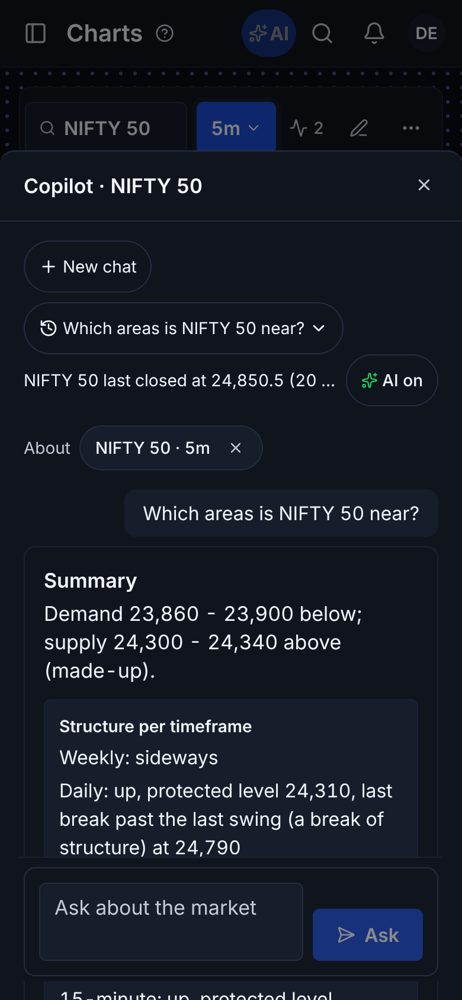
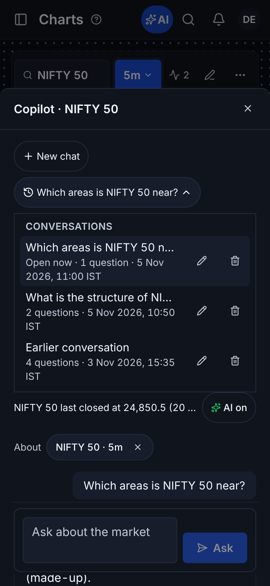
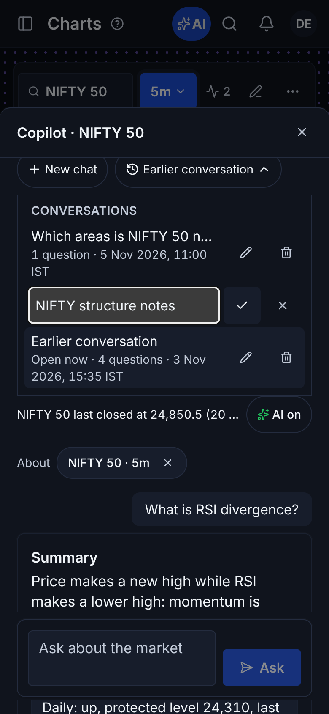
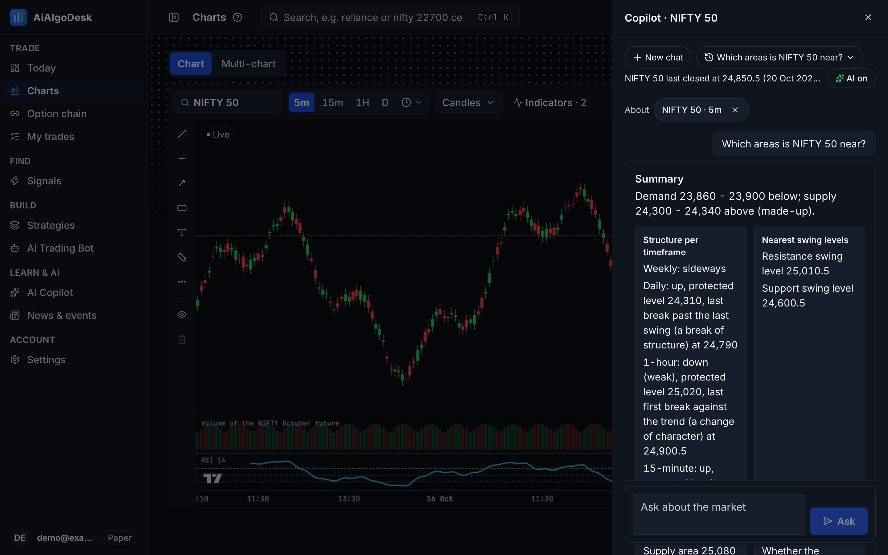
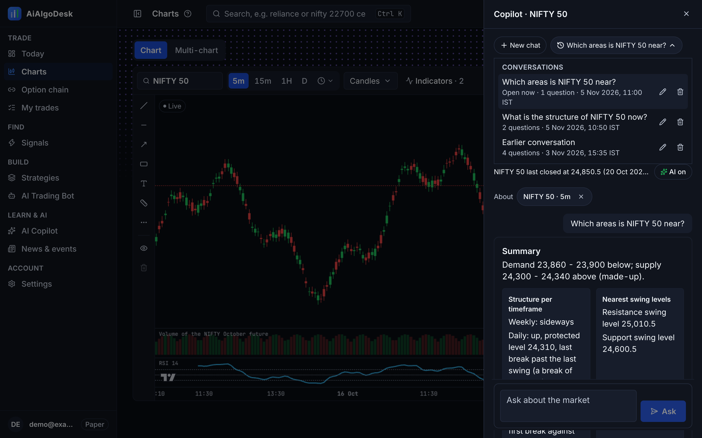
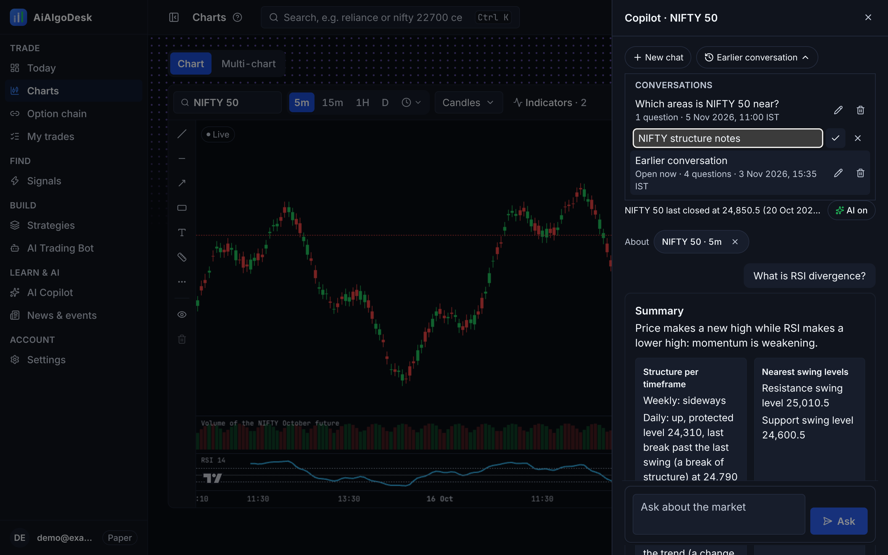

CH-2 - Claude-like Copilot chat sessions (mocked API, made-up data)
New chat · the list of his conversations (most recent first, "Open now" marked) · open an earlier one · rename · delete (asked once more).
390 phone

New chat → the question starts a new conversation
Conversations list
Rename1440 desktop

New chat
Conversations list
Earlier conversation opened; rename